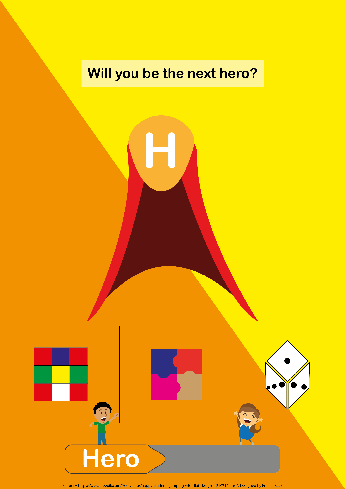
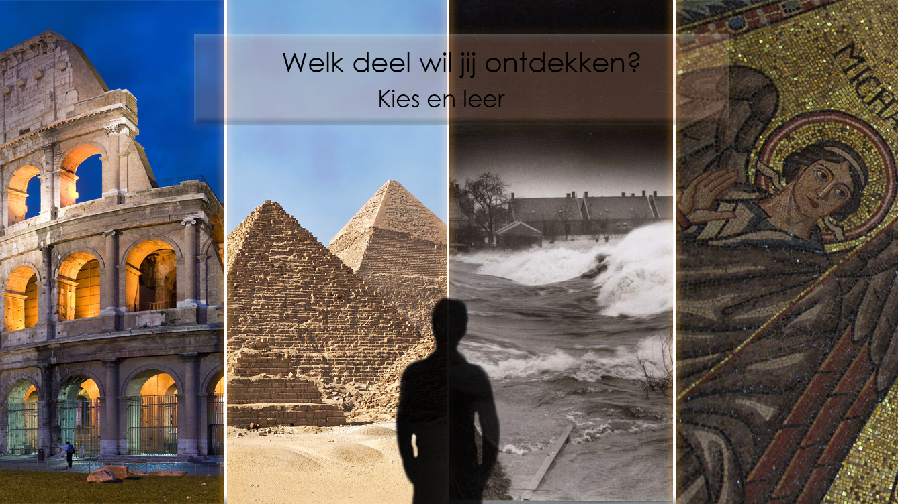
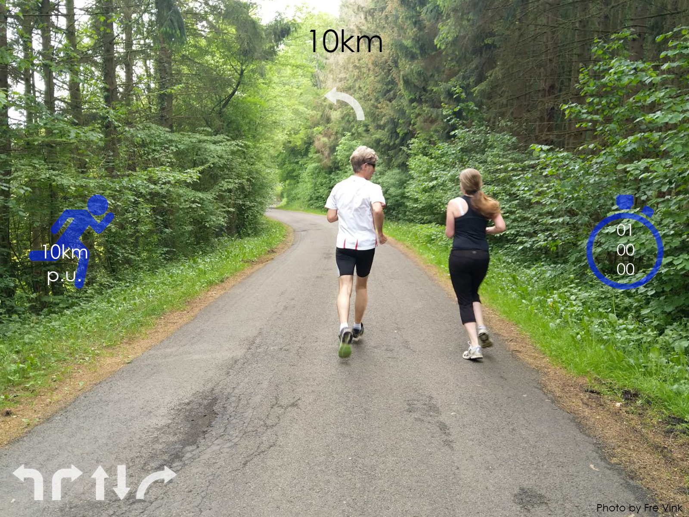

Voordat u start met de hele pagina door te lezen opzoek naar dat wat relevant is voor u,
laat mij helpen! Voor de concepten uit een aantal gekozen onderwerpen gaat u naar het begin Healthcare for kids.
Is dat toch niet wat u zoekt, maar wilt u mijn onderzoek zien? Ga dan naar het onderzoek.
Als laatst heb ik nog een reflectie geschreven die u nog wel zou willen lezen, ga dan naar mijn reflectie.
Healtcare for kids
HERO
VR Game HERO is voor kinderen die een lange tijd in het ziekenhuis moeten liggen. Dankzij Virtual Reality worden de kinderen naar een
fantasie wereld gebracht waar zij een eigen held kunnen worden. Het spel gebruikt een VR bril en een handheld apparaat waardoor de kinderen niet uit hun eigen bed te hoeven.
Door een extra handheld apparaat kunnen de kinderen puzzels, dobbelsteen en kaartspellen en visuele spelletjes spelen zonder van hun plaatst af te gaan.
Door te winnen, verdedigen zij de wereld van monsters waardoor zij een held kunnen worden.
Het spel is voor kinderen die voor een langere periode in het ziekenhuis moeten blijven. Om hun leven een moment minder ellendig te laten voelen, kunnen zij hun eigen held worden.

Education for highschool kids
HISTORY LESSONS
Om kinderen op de middelbare school geschiedenis minder stoffig te laten zijn, worden de kinderen getransporteerd naar de geschiedenis.
De geschiedenislessen worden aangeboden in Virtual Reality lessen zodat de kinderen daadwerkelijk op belangrijke momenten staan toen de geschiedenis werd geschreven.
Om de beelden leeftijdsvriendelijk te houden wordt er gekeken naar de klas en opleidingsniveau en daar worden de beelden op afgestemd.
Om binnen de lesduur te passen worden ook daar de beelden op af gestemd. Niet alleen de lessen worden gegeven met VR, maar de toetsen kunnen ook in de geschiedenis worden afgenomen.
Om de studenten de geschiedenis te laten ervaren, wordt er gebruik gemaakt van VR brillen in een veilige omgeving.
Geschiedenis wordt vaak door jongere studenten gezien als saai en om studenten juist meer interesse te laten krijgen in het verleden en er van te leren. Op deze manier wordt de geschiedenis minder stoffig en het leren leuker!

Sports
Easy running
Voor de hardloper wordt er gebruik gemaakt van Augumented Reality in een (zonne)bril. Tijdens het hardlopen gebruikt de hardloper de bril waardoor zij kunnen zien hoever zij al hebben gerend.
Niet alleen de kilometers worden worden weergegeven, maar ook de duur van de loop, wat de huidige tijd is en hoe snel zij rennen(miles of aantal kilometers per uur).
De hardloper hoeft niet meer naar zijn horloge te kijken tijdens het lopen wat extra energie kost en staat verbonden met hun eigen hardloophorloge. Dankzij het horloge en de bril wordt de locatie van de persoon bij gehouden.
Dit biedt de mogelijkheid voor de loper dat hij of zij niet meer hoeft te verdwalen. Nu worden de routeaanduidingen niet prompt in het gezichtsveld gezet om verkeersongelukken te verkomen.

The research
Tree
Het VR project Tree is opgezet om mensen zich er bewust van te laten worden dat bomen essentieel zijn voor het bestand van onze wereld (en de mensen).
Door gebruik te maken van VR en de gebruiker te laten transformeren in een boom willen zij zo bewust zijn creëren dat de bomen hard nodig zijn.
Ik vind dit een mooi uitgevoerd project en zeer zeker in combinatie met de gedachtegang erachter. Niet alleen is het visueel mooi ontworpen en lijkt het aan te slaan,
maar het idee vind ik er ook heel mooi achter. Het is belangrijk dat er awareness ontstaat voor niet alleen bomen, maar ook het regenwoud.
Het project heeft een aantal awards mogen ontvangen.
De makers achter het VR project komt van de https://www.giantsofficial.com vandaan, maar gedachtegang achter is bedacht door het team van https://www.treeofficial.com.
Credits van dit project gaan naar Milica Zec en Winslow Porter, beide directors. Aleksandar Protic, Jakob Kudsk Steensen, Scott Martin Gershin, Xin Liu, Yedan Qian, New Reality Company,
Here Be Dragons, Patrick J. Milling Smith, Fredrik Frizell, Catherine Waage, Draga5, David Droga, Justin Durazzo, Jessie Hooper, Jen Vitale, Fondazione Pianoterra Onlus, Alessia Bulgari,
Diana Barrett (The Fledgling Fund) Chicken and Egg en H.W. Buffalo & CO.
Voor meerdere namen verwijs ik u graag naar de website van Tree.
The reflection
Het onderwerp VR en AR was niet geheel onbekend voor mij, maar ik kende slechts een beetje door het proberen van een VR bril.
Daarom vond ik het fijn om de mogelijkheid te krijgen om mij te verdiepen in deze tak van de techniek.
Wat meteen duidelijk voor mij werd, was dat er een hoop mogelijkheden zijn met onder andere Exterion Games.
Ik zou graag willen zien hoe deze twee samen met elkaar werken om een nieuwe experience neer te zeten.
Er waren een aantal dingen die mij in zijn greep hadden met betrekking tot de uitgevoerde opdrachten. Zo wilde ik meteen de VR inzetten voor onderwijs en het welzijn voor kinderen.
Ik vind dat dit essentieel is en als dit goed wordt gedaan dat er dan een mooie toekomst opengaat waarin meer kinderen willen leren.
Doordat ik niet meer in zijn geheel groen was voor het onderwerp waren mij verwachtingen ook hoger. Ik verwachte nieuwe kennis en uitdagingen voor mij om dit toe te kunnen passen.
Het heeft dan ook niet teleurgesteld. Ik vond het leuk om meer te leren over de onderwerpen en om de vrijheid te krijgen om er zelf mee aan de slag te gaan.
De opdrachten hebben mij een bepaalde drive laten ervaren waarvan ik wist dat ik het wel had, maar nog niet in de opleiding heb kunnen toepassen.
Namelijk scholing van jonge kinderen en welzijn van anderen. Door persoonlijke ervaringen vind ik dat deze dingen heel veel aandacht moeten krijgen.
Dit is voor mij een onderwerp waarin mij meer wil verdiepen in de literatuur/blogs, maar ook het ervaren van diverse VR en AR experiences. Ik kijk ernaar uit om mij eigen onderzoek te doen naar het onderwerp.